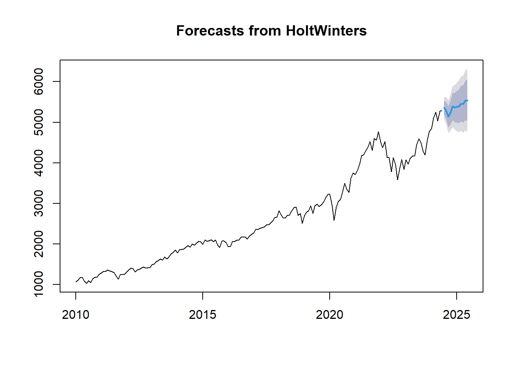
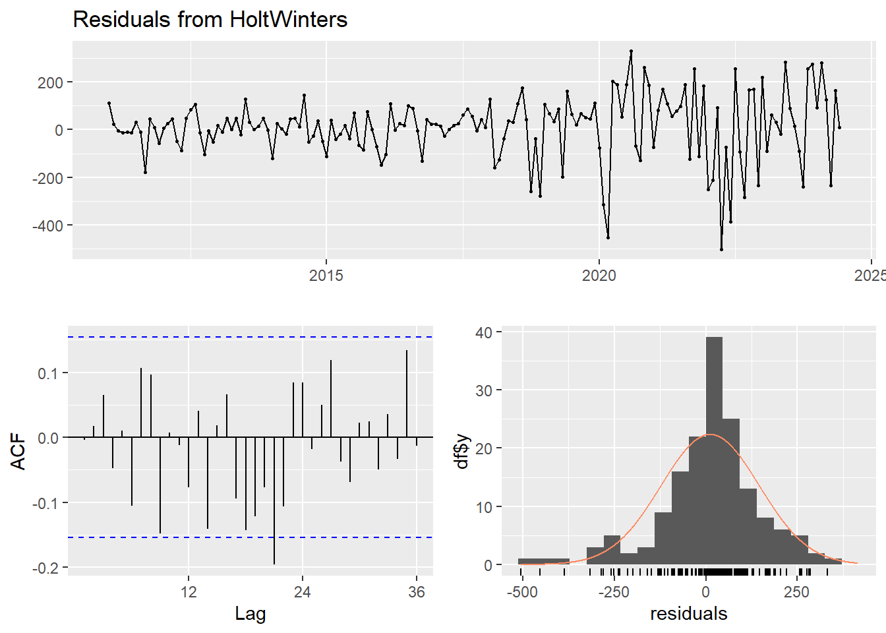
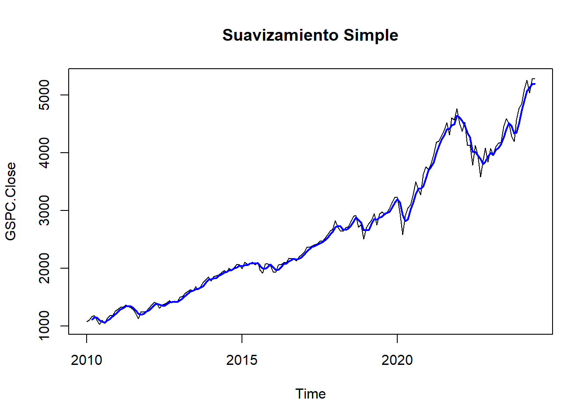

Capítulo 5 Desarrollo del modelo Holt Winter
El modelo Holt-Winters es una técnica de suavizamiento exponencial utilizada para realizar pronósticos en series temporales. Este modelo es especialmente útil cuando se espera que los datos tengan patrones estacionales. El modelo Holt-Winters se divide en dos variantes principales: la aditiva y la multiplicativa, dependiendo de la naturaleza de la estacionalidad (constante o proporcional al nivel de la serie).
Para ajustar el modelo a nuestros datos, podemos elegir entre la variante aditiva y la multiplicativa especificando los parámetros seasonal a la serie temporal obtenida anteriormente.
modelo_hw_GSPC <- HoltWinters(TS_GSPC, seasonal = "additive")
# Ver el resumen del modelo Holt-Winters
summary(modelo_hw_GSPC)## Length Class Mode
## fitted 648 mts numeric
## x 174 ts numeric
## alpha 1 -none- numeric
## beta 1 -none- numeric
## gamma 1 -none- numeric
## coefficients 14 -none- numeric
## seasonal 1 -none- character
## SSE 1 -none- numeric
## call 3 -none- callA continuación, vamos a realizar el pronostico de nuestro modelo de Holt Winter para el mismo periodo de tiempo de 12 meses que utilizamos para el modelo ARIMA.
5.1 Pronostico del Modelo Holt WInter
if (!require(forecast)) {
install.packages("forecast")
library(forecast)
}
# Realizamos el pronóstico
pronostico <- forecast(modelo_hw_GSPC, h = 12)
print(pronostico)## Point Forecast Lo 80 Hi 80 Lo 95 Hi 95
## Jul 2024 5360.715 5188.250 5533.179 5096.953 5624.477
## Aug 2024 5274.049 5051.808 5496.290 4934.161 5613.937
## Sep 2024 5136.233 4873.088 5399.379 4733.787 5538.680
## Oct 2024 5246.722 4947.876 5545.568 4789.676 5703.767
## Nov 2024 5387.990 5056.958 5719.023 4881.720 5894.261
## Dec 2024 5367.982 5007.334 5728.629 4816.418 5919.545
## Jan 2025 5381.724 4993.441 5770.006 4787.897 5975.551
## Feb 2025 5395.230 4980.896 5809.565 4761.560 6028.900
## Mar 2025 5459.481 5020.394 5898.568 4787.956 6131.006
## Apr 2025 5451.595 4988.847 5914.344 4743.882 6159.309
## May 2025 5537.725 5052.243 6023.206 4795.245 6280.205
## Jun 2025 5544.603 5037.192 6052.014 4768.585 6320.621 ## Diagnostico del Modelo
De igual forma que lo hicimos con el modelo ARIMA, con la prueba de Ljung-Box, vamos a validar la independencia de los residuos, para verificar si estan correlacionados o no.

##
## Ljung-Box test
##
## data: Residuals from HoltWinters
## Q* = 37.671, df = 24, p-value = 0.03746
##
## Model df: 0. Total lags used: 24Este p-valor es menor que 0.05, aunque es más alto que el del modelo ARIMA. También indica evidencia de autocorrelación en los residuos del modelo Holt-Winters, lo que sugiere que este modelo tampoco está capturando completamente la estructura de los datos.
De esta forma, podemos concluir que ambos modelos presentan autocorrelación en los residuos: Tanto el modelo ARIMA(0,0,1) como el modelo Holt-Winters tienen residuos que muestran evidencia de autocorrelación, lo que sugiere que ninguno de los dos modelos es completamente adecuado para los datos sin realizar ajustes adicionales.
El suavizamiento de la variable tiempo, también conocido como suavizamiento de series temporales, implica aplicar técnicas para reducir la variabilidad y el ruido en los datos temporales, facilitando la identificación de tendencias y patrones subyacentes.
5.2 Suavizamiento Exponencial Simple (Simple Exponential Smoothing)
El suavizamiento exponencial simple asigna más peso a las observaciones más recientes.
if (!require(TTR)) {
install.packages("TTR")
library(TTR)
}
# Suavizamiento simple con una ventana de 3 periodos
sma <- SMA(TS_GSPC, n = 3)
# Graficar la serie original y la suavizada
plot(TS_GSPC, main="Suavizamiento Simple", col="black")
lines(sma, col="blue", lwd=2) ## Suavizamiento Exponencial Doble de Holt (Holt’s Linear Trend Method)
Este método extiende el suavizamiento exponencial para considerar tanto el nivel como la tendencia.
# Suavizamiento exponencial doble de Holt
holt_model <- holt(TS_GSPC)
# Graficar la serie original y la suavizada
plot(TS_GSPC, main="Suavizamiento Exponencial Doble de Holt", col="black")
lines(fitted(holt_model), col="red", lwd=2) Se puede observar como el metodo de suavizamiento simple tiende a suavizar mas los datos de la serie temporal presentada que el metodo de suavizamiento exponencial doble Holt.
Se puede observar como el metodo de suavizamiento simple tiende a suavizar mas los datos de la serie temporal presentada que el metodo de suavizamiento exponencial doble Holt.